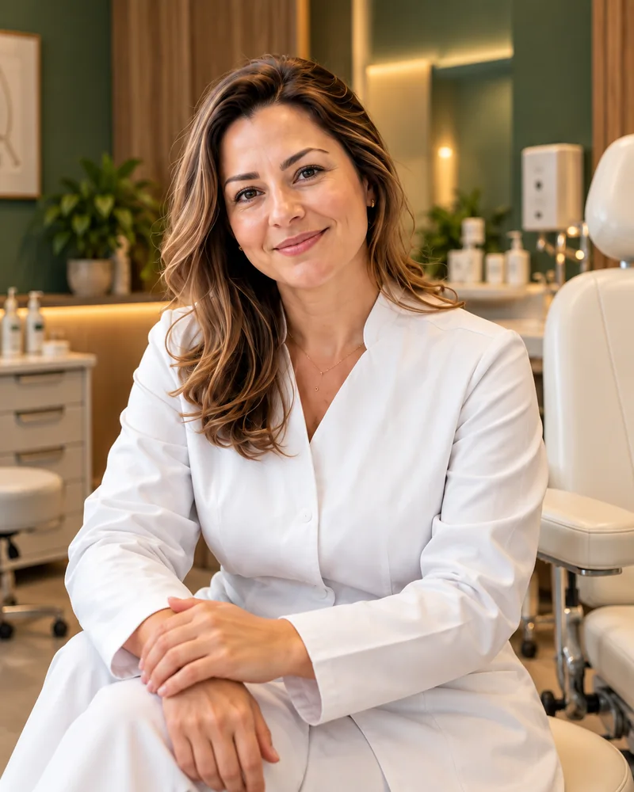
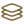
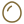
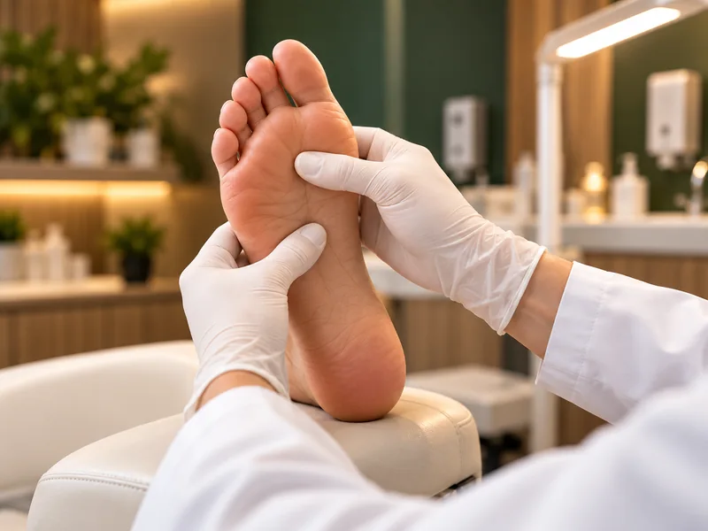
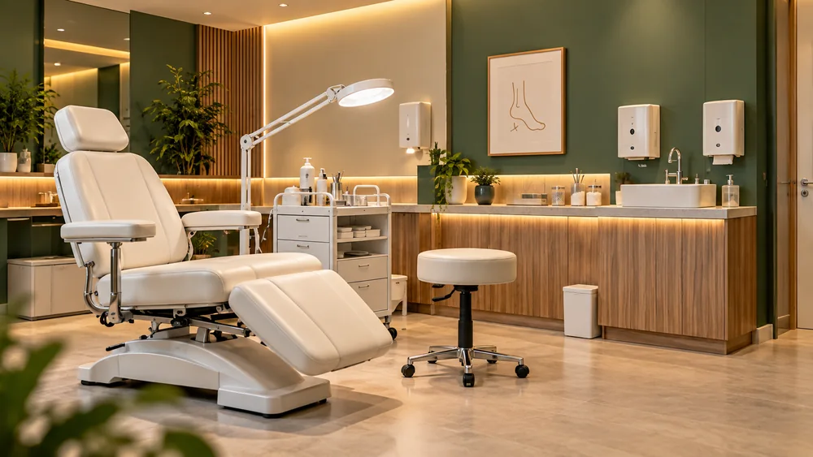

cuidado
Podologia preventiva
Atenção regular aos pés e orientações para o cuidado diário.
CLÍNICA DE PODOLOGIA
Um olhar atento, uma conversa tranquila.
Cuidado individual para acompanhar seus passos.
Acolhimento do primeiro contato ao atendimento.

Seu tempo. Seu cuidado.
NOSSOS CUIDADOS
Caminhar, trabalhar, viver.
Seus pés acompanham tudo isso.
E também merecem atenção.
Selecione um ou mais serviços para conversar pelo WhatsApp.
Atenção regular aos pés e orientações para o cuidado diário.
Cuidado com os pés das crianças, com atenção e acolhimento.
Atenção aos pés de quem pratica esportes e atividades físicas.
Avaliação individual para orientar o cuidado e os próximos passos.

Avaliação das unhas e das possibilidades de cuidado individual.

Cuidados definidos conforme a avaliação e a necessidade da pele.
Atenção ao desconforto ao redor da unha, com avaliação individual.
Acompanhamento das unhas e orientações para a continuidade do cuidado.
SEU CUIDADO COMEÇA AQUI
Selecione os serviços ou peça orientação pelo WhatsApp.
A mensagem será preparada com suas escolhas.

CUIDADO, PASSO A PASSO
Cada pessoa chega com uma história. O atendimento começa por ouvir a sua.
Uma conversa para entender suas dúvidas e necessidades.
Um olhar individual para o cuidado com seus pés.
Orientações e condutas explicadas com clareza.
Atenção que também faz parte da sua rotina.
UM RESPIRO NA SUA ROTINA
Luz suave, conforto e atenção aos detalhes.
Uma proposta de espaço para você
se sentir à vontade, desde a chegada.

QUEM CUIDA DE VOCÊ
Acreditamos em um atendimento que começa pela escuta e respeita suas necessidades.
Mais do que uma etapa da sua agenda, um momento para olhar com atenção para você. Com explicações claras, tranquilidade e cuidado em cada detalhe.
DÚVIDAS FREQUENTES
Clareza para você dar
o próximo passo com tranquilidade.
A proposta começa com uma conversa sobre suas necessidades e uma avaliação individual. Os cuidados e as orientações são explicados antes de qualquer procedimento.
Entre em contato pelo WhatsApp para consultar os horários e combinar sua avaliação.
Essa orientação depende de uma avaliação individual. Os serviços apresentados ajudam a conhecer a proposta, mas não substituem a conversa com a profissional.
Ao agendar, você poderá esclarecer dúvidas e receber as orientações da clínica para sua visita.
UM TEMPO PARA VOCÊ
Vamos conversar sobre o que seus pés precisam?
Agendamento pelo WhatsApp.
Envie sua mensagem e consulte os horários.